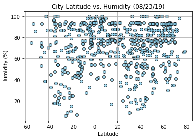

Humidity appears to be correlated to the latitude. It is difficult to tell how significant
the relationship is due to the dataset only being one day. There is a clear trend though
that closer to 0 latitude has higher percentage of humidity.
With a larger dataset, it is likely that the relationship would be significant. Currently,
it is difficult to ascertain whether data is consistent or if this specific day was an
outlier. The only observation that we had with a clearer correlation was the maximum temperature.